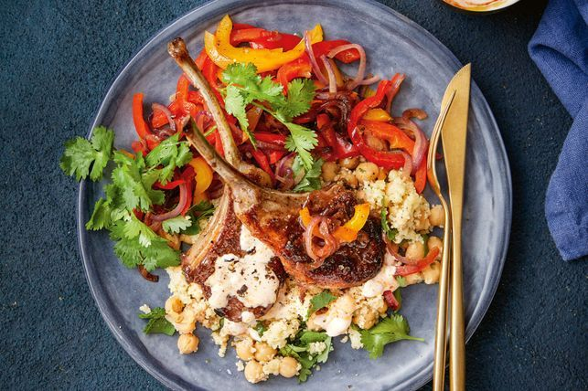

17-minute spiced lamb cutlets with couscous salad
Ingredients
- 8 French-trimmed lamb cutlets
- 1 tsp ground cumin
- 2 tbsp extra virgin olive oil
- 1 red onion, halved, thinly sliced
- 1 red capsicum, deseeded, thinly sliced
- 1 yellow capsicum, deseeded, thinly sliced
- 90g (1/3 cup) Greek-style yoghurt
- 1 lemon, rind finely grated, halved
- 150g (3/4 cup) couscous
- 185ml (3/4 cup) boiling water
- 1 bunch fresh coriander, top leaves torn off
- 400g can chickpeas, rinsed, drained
- 2 tsp harissa paste
3 Method Steps
Step 1
Sprinkle lamb with cumin. Season. Heat 11 ⁄2 tbs oil in a large non-stick frying pan over high heat. Add onion and capsicum. Season. Cook, stirring occasionally, for 5 minutes. Push capsicum mixture to the side. Add lamb. Cook, turning lamb and moving capsicum mixture, for 5 minutes or until lamb is cooked to your liking and capsicum mixture has softened. Remove from heat. Squeeze over 1 lemon half.
Step 2
Meanwhile, place couscous and lemon rind in a heatproof bowl. Add boiling water and remaining oil. Cover with a plate. Set aside for 5 minutes or until liquid is absorbed. Use a fork to separate grains. Add coriander, reserving a few sprigs, and chickpeas. Squeeze over remaining lemon half. Season. Stir to combine.
Step 3
Place yoghurt in a serving bowl. Swirl through harissa. Serve with lamb, capsicum mixture and couscous, topped with reserved coriander.